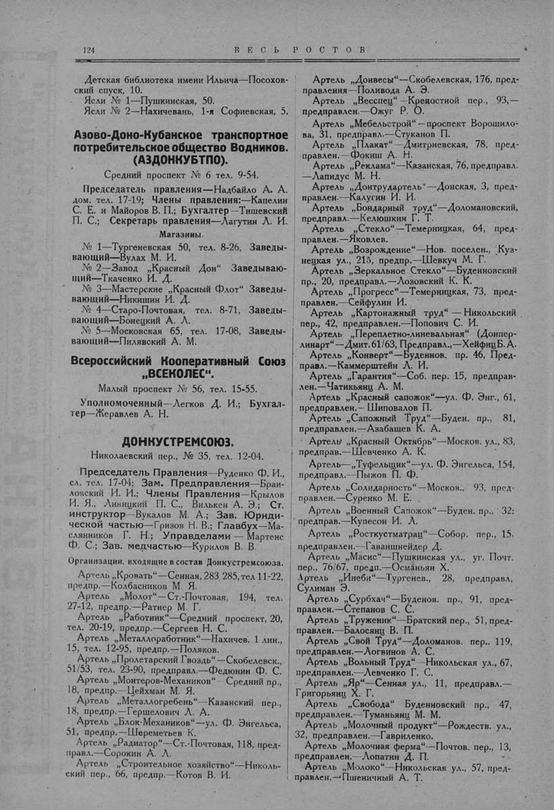

Лист источника 174
Скан

Распознанный текст
124 В Е С Ь Р О С Т О В
Детская библиотека имени Ильича—Посохов-
ский спуск, 10.
Ясли № 1—Пушкинская, 50.
Ясли № 2—Нахичевань, 1-я Софиевская, 5.
Азово-Доно-Кубанское транспортное
потребительское общество Водников.
(АЗДОНКУБТПО).
Средний проспект № 6 тел. 9-54.
Председатель правления—Надбайло А. А.
дом. тел. 17-19; Члены правления:—Капелин
С. Е. и Майоров В. П.; Бухгалтер --Тишевский
П. С.; Секретарь правления—Лагутин Л. И.
Магазины.
№ 1—Тургеневская 50, тел. 8-26, Заведы-
вающий—Вулах М. И.
№ 2—Завод „Красный Дон“ Заведываю-
щий—Ткаченко И. Д.
№ 3—Мастерские „Красный Флот“ Заведы-
вающий—Никишин И. Д.
№ 4—Старо-Почтовая, тел. 8-71, Заведы-
вающий—Бонецкий А. Л.
№ 5—Московская 65, тел. 17-08, Заведы-
вающий—Пилявский А. М.
Всероссийский Кооперативный Союз
„ВСЕКОЛЕС“.
Малый проспект № 56, тел. 15-55.
Уполномоченный—Легков Д. И.; Бухгал-
тер—Жеравлев А. Н.
ДОНКУСТРЕМСОЮЗ.
Николаевский пер., № 35, тел. 12-04.
Председатель Правления—Руденко Ф. И.,
сл. тел. 17-04; Зам. Предправления—Браи-
ловский И. И.; Члены Правления—Крылов
И. Я., Линицкий П. С., Вилькен А. Э.; Ст.
инструктор—Вукалов М. А.; Зав. Юриди-
ческой частью—Гризов Н. В.; Главбух—Ма-
слянников Г. Н.; Управделами — Мартенс
Ф. С.; Зав. медчастью—Курилов В. В.
Организации, входящие в состав Донкустремсоюза.
Артель „Кровать“—Сенная, 283/285, тел 11-22,
предпр.—Колбасников М. Я.
Артель „Молот“—Ст.-Почтовая, 194, тел.
27-12, предпр.—Ратнер М. Г.
Артель „Работник“—Средний проспект, 20,
тел. 20-19, предпр.—Сергеев Н. С.
Артель „Металлоработник“—Нахичев. 1 лин.,
15, тел. 12-95, предпр.—Поляков.
Артель „Пролетарский Гвоздь“—Скобелевск.,
51/53, тел. 23-90, предправл.—Федюнин Ф. С.
Артель „Монтеров-Механиков“—Средний пр.,
18, предпр.—Цейхман М. Я.
Артель „Металлогребень“—Казанский пер.,
18, предпр.—Гершелович Л. А.
Артель „Блок-Механиков“—ул. Ф. Энгельса,
51, предпр.—Шереметьев К.
Артель „Радиатор“—Ст.-Почтовая, 118, пред-
правл.—Сорокин А. Л.
Артель „Строительное хозяйство“—Николь-
ский пер., 66, предпр.—Котов В. И.
Артель „Донвесы“—Скобелевская, 176, пред-
правления—Поливода А. Э.
Артель „Весспец“—Крепостной пер., 93,—
предправлен.—Ожуг Р. О.
Артель „Мебельстрой“—проспект Ворошило-
ва, 31, предправл.—Стуканов П.
Артель „Плакат“—Дмитриевская, 78, пред-
правлен.—Фокиш А. Н.
Артель „Реклама“—Казанская, 76, предправл.
—Лапидус М. Н.
Артель „Донтрудартель“—Донская, 3, пред-
правлен.—Калугин И. И.
Артель „Бондарный труд“—Доломановский,
предправл.—Келюшкин Г. Т.
Артель „Стекло“—Темерницкая, 64, пред-
правлен.—Яковлев.
Артель „Возрождение“—Нов. поселен., Куз-
нецкая ул., 215, предпр.—Шевкуч М. Г.
Артель „Зеркальное Стекло“—Буденновский
пр., 20, предправл.—Лозовский К. К.
Артель „Прогресс“—Темерницкая, 73, пред-
правлен.—Сейфулин И.
Артель „Картонажный труд“ — Никольский
пер., 42, предправлен.—Попович С. И.
Артель „Переплетно-линевальная“ (Донпер-
линарт“—Дмит. 61/63, Предправл.,—Хейфиц Б. А.
Артель „Конверт“—Буденнов. пр. 46, Пред-
правл.—Каммерштейн Л. И.
Артель „Гарантия“—Соб. пер. 15, предправ-
лен.—Чатикьянц А. М.
Артель „Красный сапожок“—ул. Ф. Энг., 61,
предправлен.—Шиповалов П.
Артель „Сапожный Труд“—Буден. пр., 81,
предправлен.—Азабашев К. А.
Артель „Красный Октябрь“—Москов. ул., 83,
предправ.—Шевченко А. К.
Артель—„Туфельщик“—ул. Ф. Энгельса, 154,
предправл.—Пыжов П. Ф.
Артель „Солидарность“—Москов., 93, пред-
правлен.—Суренко М. Е.
Артель „Военный Сапожок“—Буден. пр., 32:
предправ.—Купесон И. Л.
Артель „Росткустматрац“—Собор. пер., 15,
предправлен.—Гаваншнейдер Д.
Артель „Масис“—Пушкинская ул., уг. Почт.
пер., 76/67, предп.—Османьян Х.
Артель „Инеби“—Тургенев., 28, предправл,
Сулиман Э.
Артель „Сурбхач“—Буденов. пр., 91, пред-
правлен.—Степанов С. С.
Артель „Труженик“—Братский пер., 51, пред-
правлен.—Балосянц В. П.
Артель „Свой Труд“—Доломанов. пер.. 119,
предправлен.—Логвинов А. С.
Артель „Вольный Труд“—Никольская ул., 67,
предправлен.—Левченко Г. С.
Артель „Яр“—Сенная ул., 11, предправл.—
Григорьянц Х. Г.
Артель „Свобода“ Буденновский пр., 47,
предправлен.—Туманьянц М. М.
Артель „Молочный продукт“—Рождеств. ул.,
32, предправлен.—Гавриленко.
Артель „Молочная ферма“—Почтов. пер., 13,
предправлен.—Лопатин Д. П.
Артель „Молоко“—Никольская ул., 57, пред-
правлен.—Пшеничный А. Т.